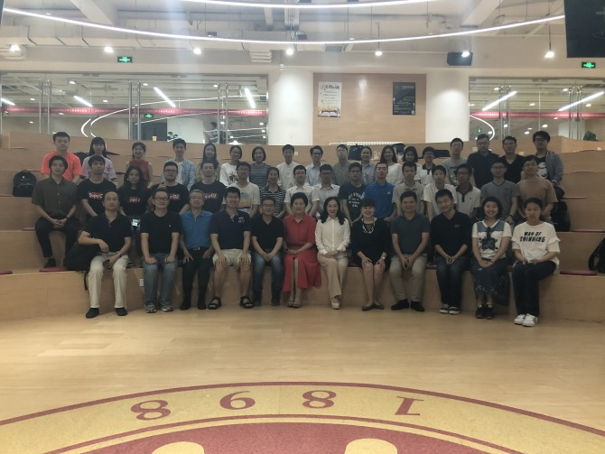

useful links
Dlib组主页姐妹课《职业规划与领导力发展》链接
课程编号
本科生、研究生课号：04833010
course time
2020.2.20–6.4每周周四晚上10~11节
(6：40-8：30pm)
classroom
北大二教211
微信号
pkuxstart

contact
助教：
宋伊萍
songyiping@pku.edu.cn
琚玮
juwei@pku.edu.cn
李景聿
motren909@pku.edu.cn
科技创新与创业
Technology innovation and Entrepreneurship
课程定位
课程旨在培养学生的创新思维，让学生了解产业分析、需求把握、产品设计、商业计划等基本创业流程，掌握团队建设、领导力培养等创业技能。课程以学生听讲座为主，邀请多位创业成功的杰出人生授课，穿插大量的课堂讨论，并辅以物联网、企业大数据、人工智能、高科技产业等实际案例分析。实践环节以团队项目（可以是已有项目）驱动，学生须亲自参与项目调研及开发工作（有分工合作，不一定要编程），体验科技创业的激情与艰辛。本课还根据学生自己提出来的创新项目的特点，安排授课嘉宾或相关行业的领军人物在课下对各创业团队进行互动和指导。通过本课程的学习，有助于提升学生的科学素养，并培养学生的科技敏感和商业嗅觉。
本课程不限制选课专业年级，欢迎全校学生踊跃报名。
2020年春季“科技创新与创业”课程安排如下：
| 时间 | 嘉宾 | 主题 |
|---|---|---|
| 2.20 | 主持人张铭、张金娜 | |
| 2.27 | 去哪儿董事长谌振宇 | 年轻人创业的资本和机会, 总结稿 |
| 3.5 | 好未来 素质教育事业群总裁吴颖 | |
| 3.12 | 梅花天使创投创始合伙人吴世春 | |
| 3.19 | 唱吧CEO陈华 | |
| 3.26 | 哈佛博士，长木谷CEO张逸凌 | 人工智能与骨科医学, 总结稿 |
| 4.2 | 云圣智能CEO陈方平 | 超低空 · 天地一体物联体系, 总结稿 |
| 4.9 | 东方弘道资本合伙人李晓光 | 如何写商业计划书, 总结稿 |
| 4.16 | 中期答辩评委：杨爱民、张予彤、李阳、张金娜、张铭 | 中期答辩项目汇报, 总结稿 |
| 4.23 | 清枫（北京）科技有限公司CEO徐宁 | |
| 4.30 | 智唐科技董事长朱垒磊 | 产业互联网创业, 总结稿 |
| 5.7 | 放假调休，全校停课 |
|
| 5.14 | 中国国际金融股份有限公司投资银行部高级经理李博闻 | 资本主义与科技创新, 总结稿 |
| 5.21 | 明略科技联合创始人闫曌 | 商业模式创新与商业机会的把握, 总结稿 |
| 5.28 | 麦肯锡健康创始人，CEO樊琴 | 领导力的构建与应用, 总结稿 |
| 6.4 | 路演评委：雷鸣、李迪、张金娜、许辰人、张铭 | 期末路演答辩, 总结稿 |
| 学生创新项目指导老师：李晓光、樊琴、陈华、张予彤、徐宁 |
考核方式
（1）课堂上表达与分享的参与程度、课程反馈 20%
（2）跟创业导师的面谈、小组活动、小组讨论 20%
（3）小组项目答辩和展示（主要商业计划书） 30%
（4）课程学习心得报告 30%
往期剪影

|
|
ChenceShi (史晨策), ZiqingYang (杨子晴)， Best Use of Intel API（1500$）@2018 Stanford Health++ Hackathon |

|
|
华盛顿全球挑战赛 |

|
|
斯坦福2017Health Hackson，CatherineJan、师浩然以及朱芄蓉同学设计的CatSpotter成功进入决赛，并夺得了PHIND Innovation Grand Prize和Intel Nervana AI Cluster Runner-Ups两项大奖 |

|
|
同学们积极参与课程和路演答辩 |
|  |
|
2018学期路演答辩 |

|
|
2017学期路演答辩 |

|
|
2016学期路演答辩 |